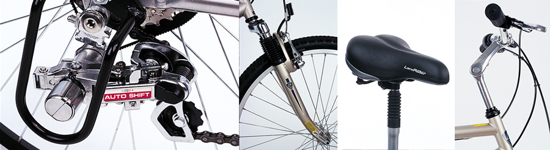

LandRider is the only bicycle to offer the patented AutoShift™ and combined with an ergonomic upright riding position it allows you to enjoy the scenery and avoid back pain and discomfort. Our fully adjustable frames are made of lightweight and durable materials and our double suspension system and comfort seats offer a smooth and more enjoyable ride.
